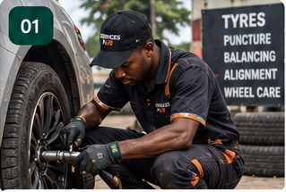
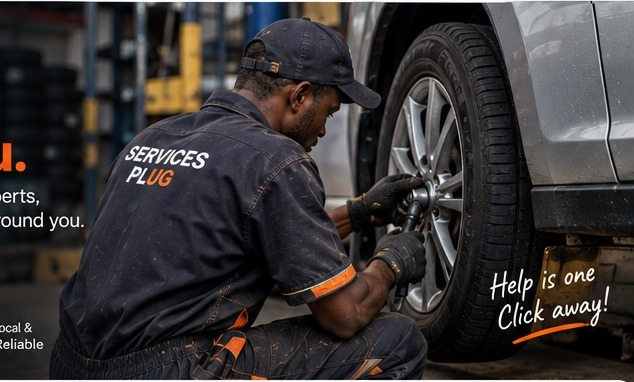
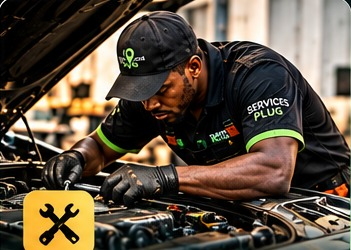
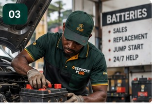

01ROADSIDE HELPTyre / Vulcanizer
↗Flat tyres, punctures, tyre changes and roadside tyre assistance.
Tyre trouble, car problems, a dead battery, or need a ride? Tell us what happened. We’ll help connect you to local assistance.

01 / SERVICES
Choose the service that fits your situation. We’ll collect the details and help connect you with a local provider.

01ROADSIDE HELPFlat tyres, punctures, tyre changes and roadside tyre assistance.

02Vehicle breakdowns, engine trouble and general repairs.

03Battery trouble, jump-start requests and replacement assistance.
Request a local rider for a trip around the area.
02 / SIMPLE BY DESIGN
Skip the stress of trying to figure out who to call. Share what you need and where you are. Services Plug helps connect you with local assistance.
Start a request ↗Select tyre, mechanic, battery assistance or rider.
Enter a landmark or use GPS to share a map location.
Your request opens in WhatsApp so we can coordinate the next step.
03 / REQUEST ASSISTANCE
Fill in a few details. Your request will be prepared for WhatsApp so we can understand the situation and follow up.
04 / ON THIS DEVICE
This list is saved only in this browser on this device. It does not show live updates from Services Plug.
No requests on this device yet.
Chat with Services Plug directly on WhatsApp.